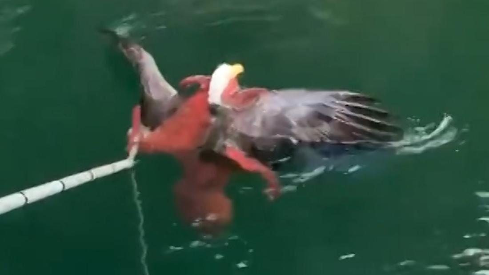

See a Bald Eagle and Octopus Tangled in Legendary Fight

The huge cephalopod was winning until the people stepped in, Bald eagles are excellent hunters. They can swoop alongside a cliff and grab a mountain goat or nose-dive toward a river to capture a salmon.
Mowi/YouTube
This week, nevertheless, one starving eagle may have bit off more than it could chew when it misjudged the size of its unlikely target, a huge Pacific octopus. When the eagle dove in to tried to pull the octopus out of the water, it instead got plucked out of the skies.
Lucky for us, salmon fishermen in British Columbia caught the results on cam.
Alisha Ebrahimji at CNN records that a group of salmon fishermen used by Mowi West salmon ranches near Quatsino on the northwestern coast of Vancouver Island were motoring home when they heard screeching and splashing. Crew member John Ilett says when they quit to investigate, they located the fight in progress, with “a full-sized eagle submerged in the water with a big giant octopus in the water trying to drag it down.”
Mowi/YouTube
” We weren’t sure if we must interfere because it is nature, survival of the fittest,” Ilett says. ” However it was heart wrenching– to see this octopus was attempting to sink this eagle.”
CBC’s Bridgette Watson reports that the team did choose to intervene. While one of his crewmates recorded, Illet got a pike pole and peeled the octopus off the raptor. “That gave the eagle just enough time to break free and swim to shore,” Illet tells her.
The octopus dove down into the water while the eagle sat on a branch on shore for 10 mins, drying off and restoring its calmness, prior to returning to the skies.
The huge Pacific octopus is the largest octopus in the world and can reach 600 pounds and 30 feet in length. On average, however, they weigh in at around 110 pounds. The eagles evaluate between 6.5 and 14 pounds.
Jennifer Mather, a cephalopod specialist at the University of Lethbridge, is naturally on team octopus. “He [Illet] deprived the poor octopus of a good meal,” she jokingly tells Leyland Cecco at The Guardian.
Octopuses, she says, are generalists, meaning they will certainly eat almost anything available, even if it’s covered in feathers and has huge talons. “They’re quite large in their victim choice,” she claims. “If something is on the surface of the water, and the octopus is close to the surface of the water, it’s food.”
In fact, this is not the very first time an octopus has actually gotten a bird for dinner. In 2012, one more person on Vancouver Island took a series of pictures of an octopus gobbling up a gull.
Locating a bald eagle swimming in the water isn’t unprecedented either. The eagles hunt for fish in open water, swooping down and grasping their meal in their powerful talons. However, sometimes, if they hook into a fish that is a little also large to fly off with, they’ll opt to hang onto their catch and swim it back to coast, utilizing the bird version of the breast stroke, reports Merrit Kennedy at NPR. Other times, the birds mistime their strike and end up in the water, forcing them to swim to coast.
Illet tells Ebrahimji that over 20 years on the water he’s seen great deals of interesting points, but this is the coolest. “It’s moments similar to this why I enjoy my job and being out in the environment where I can work and live,” he claimed. “It’s just incredible.”